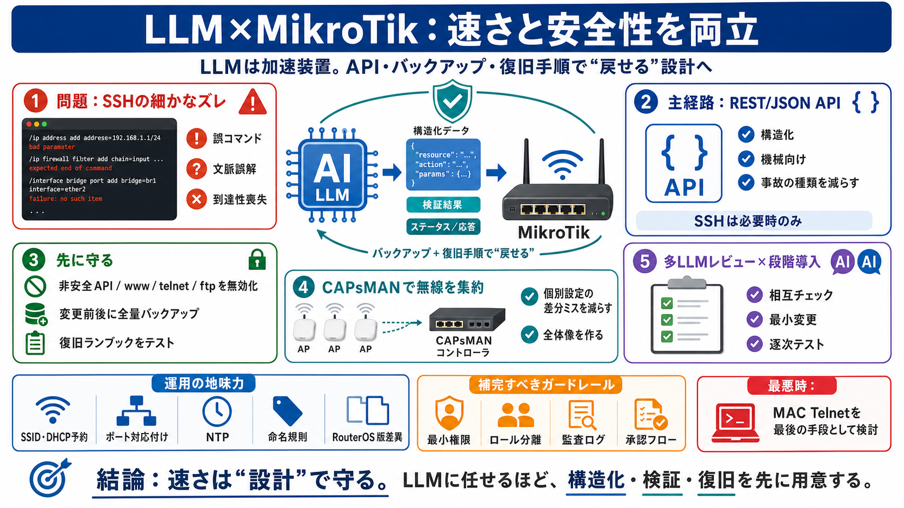

MikroTik Configuration Experiences
"They say that if you haven't spent the night at a client's premises while configuring a MikroTik, you haven't truly sta…

LLMはネットワーク構成を加速できる一方で、誤り（ハルシネーション）も起きる前提で設計する。速さと安全性を両立するための実務チェックを整理する。
SSHでテキスト往復すると、LLMが“細かなズレ”を出したときに、検証が難しくなりやすい。ネットワークは分岐・状態が多く、修復コストが高い。
存在しない手順・誤コマンド・文脈の誤解
到達性喪失／設定整合性崩壊／復旧に時間
LLMは“カオス的な設定作業”を速くするが、誤ることもある。だからこそ、機械が扱える形（API）と、戻せる仕組み（バックアップ・ランブック）で挟む。
主要な操作主体をLLMにするなら、REST/JSON APIのような構造化経路を優先する。テキスト往復より“事故の種類”を減らしやすい。
REST/JSON API（構造化・機械向け）
SSH（テキスト往復で微細事故が積む）
LLM導入でもセキュリティと復旧性は置き換えられない。危険なサービスは無効化し、変更前後で設定を全量保存する。
非安全API、www、telnet、ftp
設定の全量バックアップ
復旧ランブックをテストしておく
複数APを個別設定するとミスが増える。CAPsMAN（集中管理）で無線構成を集約すると、LLMに与えるタスクを単純化できる。
差分の見落としが起きやすい
管理を集約し“全体像”を作りやすい
複数LLMで相互レビューし、一気に適用せず変更ごとに逐次テストする。鵜呑みにせず、確認プロセスを“実装”する。
複数モデルで照合
最小ステップで逐次テスト
再現性と検証性を確保
SSIDやDHCP予約の記録、NTP設定、命名規則、ポート対応付け、RouterOSバージョン統一が、長期の事故率を下げる。LLMの生成物を運用に接続する土台になる。
SSID、（必要なら）CAPsMAN側の統一
DHCP予約の記録、ポート対応付け
NTP設定（ログ・イベント整合）
RouterOSバージョン差異の確認（構文差）
投稿は「dangerously-skip’ing-permissions」の危うさを認めつつ、最小権限・ロール分離・監査ログ・承認フローの具体は示されていない。ネットワークは可用性だけでなくセキュリティ境界でもある。
権限スキップが事故の被害を増幅
別途ガードレール設計を補完
IP重複や誤サブネットでIP経由管理が失われても、L2層（MACアドレス）経由なら到達できる場合がある。MAC Telnetは“最後の手段”として可用性を高める。
IPベース到達（IPが壊れると停止）
MAC Telnet（L2経由）で復旧ルート確保
LLMの誤りへの対策は、経路の構造化・最小変更・バックアップ・相互レビュー・復旧ランブックに集約される。SSHは全面否定ではなく“主要経路”にしない判断が核。
(1) API (2) 最小変更 (3) 全量バックアップ
複数LLM相互チェック
“必要なら使うが優先はしない”
LLMでネットワーク構成を進めるなら、REST/JSON API・セキュリティ無効化・全量バックアップ・段階的変更・CAPsMAN・復旧ランブックが中核になる。さらに権限・監査・復旧条件は読者側で補完すべき。
"They say that if you haven't spent the night at a client's premises while configuring a MikroTik, you haven't truly sta…
Telnet on Linux (firewall problems) When firewall is up and running I cannot connect to router, does the trick is iptabl…
Basic MikroTik Troubleshooting tools that WILL help you! Free MTCNA Ep.16 The Network Berg 60400 subscribers 206 likes 7…
I am trying to use the windows terminal application that comes with Mikrotik neighbor viewer to connect to a router on m…
Hello, I am a complete beginner and I am seriously struggling to setup my network. Every time I change something in the …